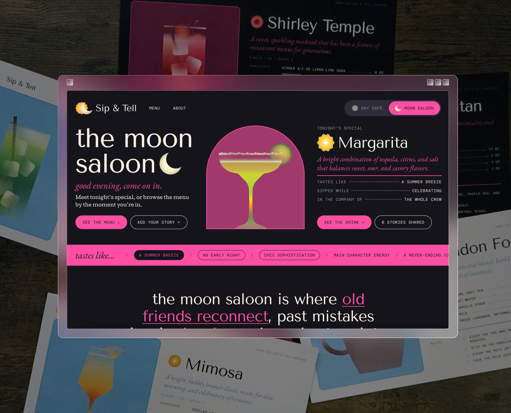

Sip & Tell
- UX Design
- Visual Identity
- Digital Illustration
Sip & Tell is an interactive community archive celebrating the drinks we enjoy and the stories we associate with them. Through The Day Café and The Moon Saloon, visitors can browse the menu, find recipes suited to their tastes through filters, explore personal stories, and contribute their own. I designed and developed the experience from initial research and sitemap through visual design, prototyping, and code.
Concept & Direction
I wanted to create a space that celebrates drinks as more than what is in the glass, focusing instead on the people, occasions, and memories surrounding them. With an editorial approach in mind, I explored how expressive typography, unconventional layouts, and print-inspired design could translate into a digital experience. The two spaces emerged as a way to give different drinking occasions their own atmosphere while remaining part of a shared community.

Visual Identity & Interaction
The initial identities for The Day Café and The Moon Saloon felt too disconnected, leading me to develop a more cohesive visual system. Shared base colors, a unified typographic palette, and an eclipse-inspired logo tie the spaces together, while individual accent colors give each its own character. I carried this visual language into the site's interactions, prototyping the full user journey in Figma and incorporating playful hover animations that make exploration exciting.
Development & Reflection
Bringing the designs into code meant translating detailed prototypes into a fully functional experience. The finished site features customizable drink recipes alongside moderated community story submissions and printable recipe cards. Connected to a Google Sheet for reviewing contributions, the archive extends beyond the screen, inviting visitors to make and share what they discover.